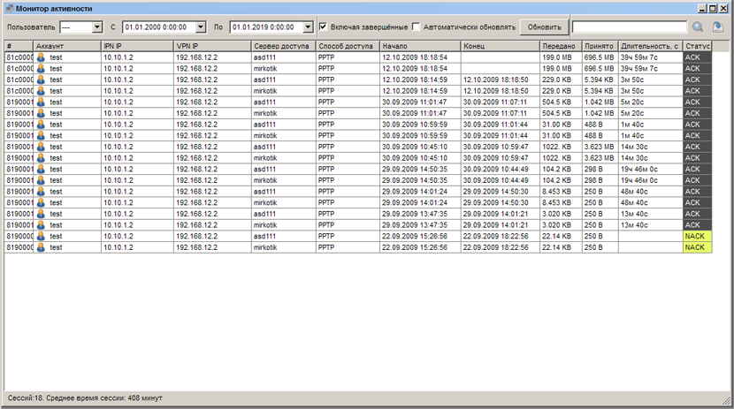

|
Интерфейс и логика |
Top Previous Next |
|
Открыть раздел «Монитор сессий» можно одним из следующих способов:
– кнопкой на панели; – через меню «Главное меню» → «Монитор сессий»;
В выпадающем списке «Пользователь» можно выбрать учетную запись, активность которой необходимо отследить либо «---» для получения информации по всем учетным записям.
 Монитор сессий
Если установлен флажок «Включая завершённые», то будет выводиться информация не только об активных, но и об уже завершенных сессиях пользователя.
Если установлен флажок «Автоматически обновлять», то информация будет обновляться автоматически каждые 25 секунд. В противном случае, для обновления информации необходимо будет воспользоваться кнопкой «Обновить».
Обратите внимание: если скорость вашего соединения с сервером невелика, пользуйтесь этой опцией с осторожностью, так как во время получения и отображения данных отключить автоматическое обновление невозможно.
В таблице информации о сессиях для каждой из них приводятся номер, название учетной записи пользователя («Аккаунт»), IP для IPN и VPN доступа («IPN IP» и «VPN IP», соответственно), «Сервер доступа» и «Способ доступа», время начала и завершения сессии («Начало», «Конец»), её продолжительность в секундах («Длительность, с»), объем переданного («Передано») и принятого («Принято») трафика. This help file was created with an unregistered evaluation copy of Help & Manual. © EC Software. All rights reserved. This message will not appear if you compile this help file with the registered version of Help & Manual. |